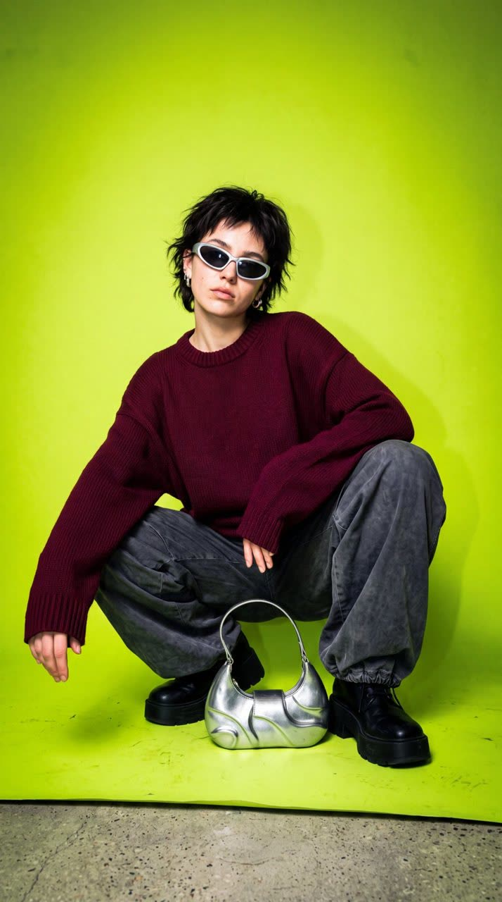

Eccentric cool street-fashion editorial
WRD-018WardrobeNano Banana 2by Cherry (@hey_am_cherry)2026-09-19

9:16 fashion editorial with bold, eccentric, effortlessly cool street styling on a saturated backdrop.
Prompt
Create a 9:16 vertical fashion editorial photograph with a bold, eccentric, effortlessly cool street-fashion aesthetic. A stylish young woman in her 20s is sitting very low on the floor in an unconventional relaxed pose, knees raised and positioned asymmetrically, leaning slightly forward with a confident almost bored expression. The pose should feel spontaneous and fashion-forward rather than like a standard model pose. She wears an oversized deep burgundy knit sweater with extremely long sleeves, loose faded charcoal parachute pants gathered around the ankles, chunky black platform shoes, and small futuristic silver sunglasses. Her short messy dark hair has natural volume and slightly wild strands. Add a small unusual sculptural handbag placed casually between her shoes, making it part of the composition. The entire studio environment is a saturated electric-lime green, including the floor and background, with subtle tonal variation rather than a flat backdrop. Strong direct flash mixed with soft ambient studio light creates dramatic shadows and a slightly raw fashion-magazine look. The image should feel like an unexpected frame from a cutting-edge streetwear editorial — playful, rebellious, quirky, stylish and visually striking. Strong silhouette, unusual proportions, lots of visual personality, bold color contrast, tactile knit fabric, realistic skin texture, messy hair detail, natural clothing wrinkles, slight photographic imperfections. Full body visible. Low camera angle. Tight vertical framing. Subject fills most of the frame while still showing the colored environment. 35mm fashion photography, direct flash, sharp details, rich contrast, contemporary avant-garde street style. Do not recreate or copy any existing photograph. Use the reference only for general inspiration and create a distinctly different outfit, pose, prop, color palette, composition and visual story.
Tags: street style, color block